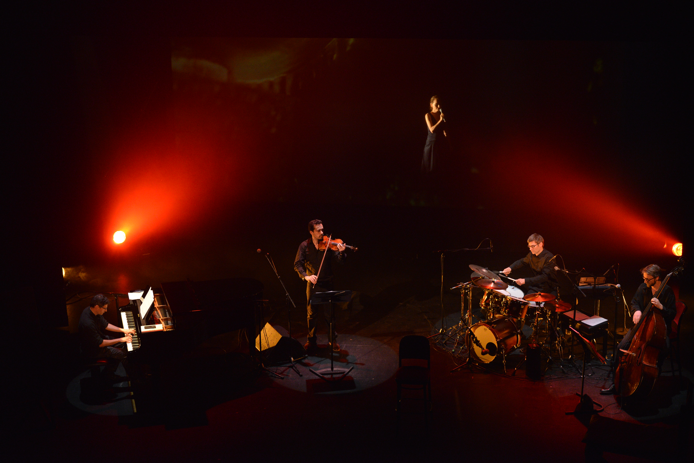

2019 · Composition · arrangement · violon
Échos d’atelier
Avec Virginie Seghers
Un projet qui occupe une place particulière dans le parcours de Matthieu Roy : il est compositeur et arrangeur d’une grande partie des chansons de l’album, puis participe aux concerts comme violoniste.
Écouter / voir un extrait ↗



© P Bourgault
Le projet
Échos d’atelier est un projet musical porté par Virginie Seghers. Matthieu Roy en assure la composition et les arrangements d’une bonne partie des chansons de l’album.
Le projet se prolonge sur scène : Matthieu Roy y joue la partie de violon, donnant à entendre les arrangements dans leur dimension interprétée et collective.
Le spectacle a notamment été enregistré en 2019 au Jeu de Paume à Aix-en-Provence.
Voir le spectacle enregistré au Jeu de Paume ↗Pour découvrir l’univers du projet, le site de Virginie Seghers est la meilleure porte d’entrée.
Échos d’atelierLe beau-livre disque de Virginie Seghers
Commander le disque ↗